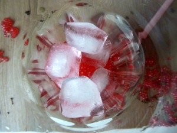
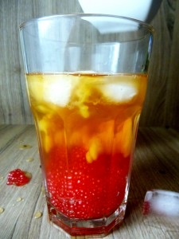
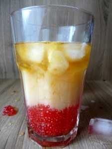
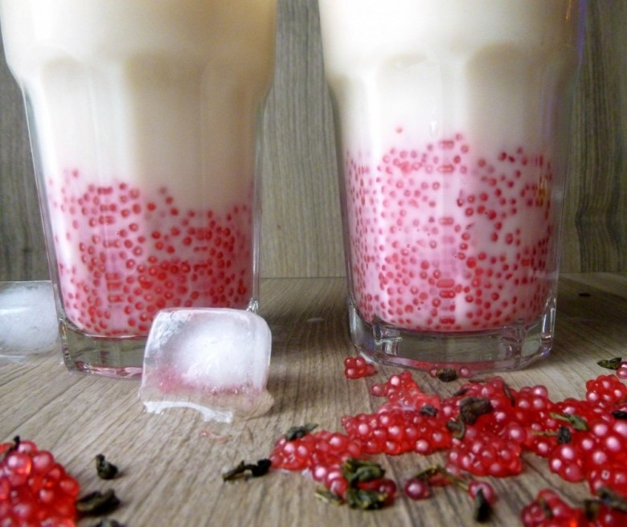

Bubble Tea Maison

Hello tout le monde!! Ce soir je vous parle du Bubble Tea! 🙂
N’avez vous jamais vu en photo ces boissons colorées avec de grosses billes au fond ? Il s’agit du BUBBLE TEA ou encore appelé Boba tea, thé aux perles, thé aux Bulles etc.. Cette boisson est originaire de Taïwnan où elle fait un tabac depuis les années 80!
Le Bubble tea est un mélange de thé vert ou noir et de sirop sucrés. Vous pouvez ou non y ajouter du lait selon vos gouts! Le plus important ce sont les perles de Tapioca qui tapissent le fond du verre!
Les perles de Tapioca ou perles du Japon sont produites à partir des racines du manioc.
Depuis que je sais m’en faire à la maison (en même temps c’est pas bien compliqué^^) c’est devenu ma boisson préférée au goûter!!!
Les perles de Tapioca sont très grosses et il faut donc de très grosses pailles (que je n’ai pas^^) mais heureusement dans n’importe quel supermarché vous trouverez des Perles du Japon ( 100% fécule de Manioc) qui sont adaptées à des pailles de tailles moyennes que l’on peut trouver plus facilement par ici… Autre différence : Les perles de Tapioca trouvées dans les épiceries chinoises sont noires la plupart du temps alors que les perles du Japon sont blanches et peuvent donc être colorées!! 🙂
Ingrédients
- Perle du Japon - 30g
- Lait
- Thé vert ou thé noir - 1 boule à thé
- Sirop de votre choix
- Colorant alimentaire
- Glacons - 6
Instructions
- Faire infuser une cuillère de thé vert ou noir (pour moi ce sera du vert!)
- Ajouter du sirop (1,2,3 cuillère en fonction de vos goûts! Moi je mets 3cas, miam !) Pour ceux là il s'agit de sirop de pêche
- Laisser refroidir
- Pendant ce temps, cuire les perles du Japon: Faire bouillir de l'eau dans une casserole. Une fois que l'eau est bouillante, baisser le feu et ajouter les perles (si vous voulez les colorer ajouter le colorant à ce moment là!) Cuire 15 min à feu doux tout en remuant
- Égoutter avec un chinois ou une passoire avec des mailles très fines (autrement vous perdrez toutes vos perles 🙁 ).
- Répartir les perles dans le fond des verres
- Ajouter les glaçons
- Verser le thé sucré et finir avec un peu de lait!
- Remuer le tout à l'aide votre paille
- Et il ne reste plus qu'à................. Siroter 🙂




Les tips de la communauté
Recette originale et amusante très facile à réaliser. Photos attrayantes qui donnent l'envie de manger. Excellentes astuces de préparation et d'où trouver les ingrédients.
Astuces
- Les pailles larges se trouvent chez Ikea ou Casa (packs mojito)
- Les perles du Japon (tapioca) sont gluantes naturellement - c'est normal
- Colorant liquide à ajouter aux perles pour les teinter
- Sirop au lieu de colorant aromatise les perles mais ne les colore pas
- Les perles de tapioca/perles du Japon se trouvent chez Tipiak en supermarché ou sur internet
Variantes suggérées
- Différentes saveurs de thé et sirops
- Perles colorées selon goût